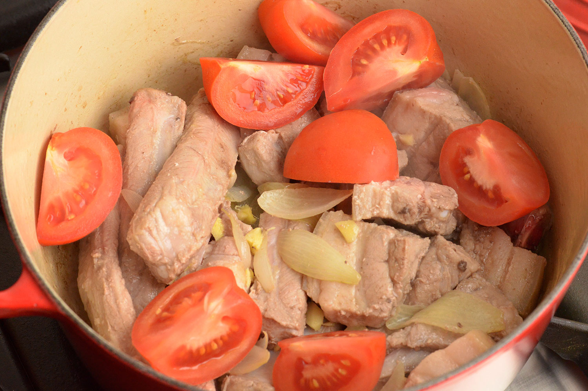

Ingredients
500g pork belly (chunks)
500g pork ribs
2 medium onions (sliced)
2.5cm of ginger (smashed and chopped)
2 tomatoes (quarters)
150g round beans
3 chillies (red or green)
1 small eggplant
6-8 okra
200g kangkung
2-2.5 litres water
3 tbsp fish sauce
1 packet Sinigang tamarind soup mix
salt to taste
Instructions
- Heat up a casserole pot with oil and sauté onions until translucent.
- Toss in the pork belly and pork ribs and cook through for about 10 mins.
- Add in the smashed ginger and stir for 1 min, then toss in the tomatoes. Then, add in the fish sauce and stir through.

- Pour in some water and bring it to a boil, then once boiling, lower heat and simmer for 40 mins under low fire.
- Add in the tamarind soup mix, chillies, snake beans and eggplant and let it boil for 8 mins.
- Toss in the okra and simmer for 3 mins.
- Add in the kangkung, then switch off fire and allow the residual heat to cook the kangkung.
Return to home page